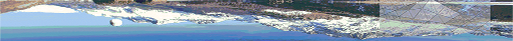

“A Geography Information System is a computer system for capturing, storing, querying, analysing, and displaying geospatial data."
- Kang-tsung Chang
We use different type of ESRI Canada technologies such as ArcGIS tools and ArcGIS Pro depends on the type of project. In addition to ESRI product, our team use Adobe Illustrator 2019 software for cartography and GIS mapping.

“Far from being an antique craft belonging to a bygone era, cartography is the art of geovisualization; a way of sharing spatial knowledge and empowering people through the application of good design, whether the medium is electronic or paper, permanent or perishable, static or dynamic”
- Alexander J Kent, Bulletin of the Society of Cartographers (2008)
Our Cartography products include designing, compilation, projection, reproduction and distribution of maps.
Our team help you to convert your hard copy or paper maps into digital GIS maps for Spatial Analysis and more edition. We accurately scan the paper maps and transform them into vector layr of original spatial data.
We create the essential concepts and add spatial data using ArcMap. We help you in data conversion from excel into spatial data and create the Geodatabase with desire coordinate system. We offer a complete palette of GIS tool to create the best analysis of your geodata.

Our Remote Sensing Imagery services include imagery classification, conversion, visualization and analysis of Arial Photography and Satellite Imagery products.

Our Application Developer team offer you a compelete system for your ArcGIS development such as: Desktop Applications, Web Applications, Web Services, and Mobile Applications.